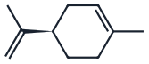
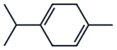
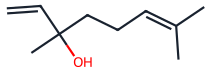
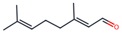
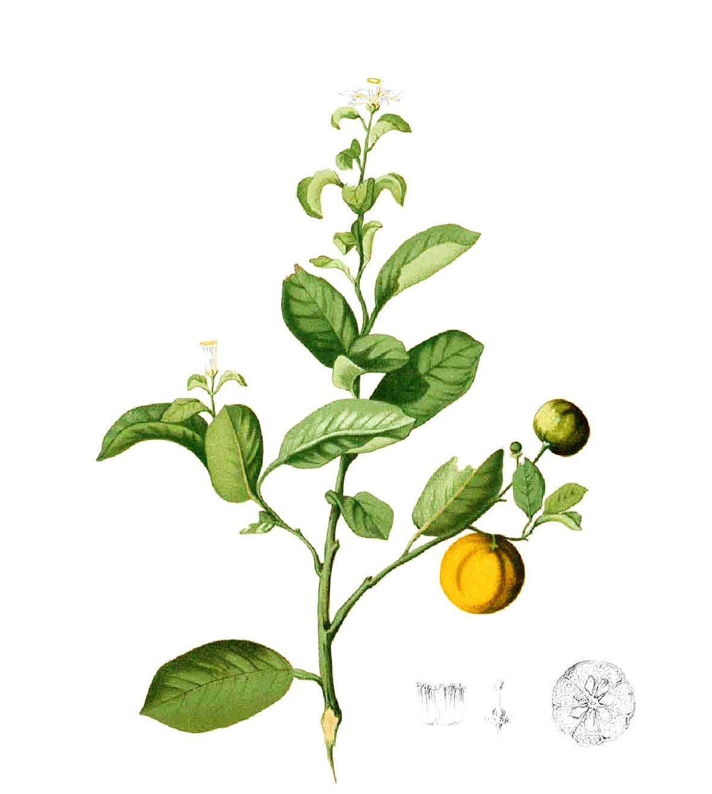

Universidad de los AndesIngeniería Química y de Alimentos
Guía del reto · Proyecto semestral · 2027-10
Hervir a 97 lo que hierve a 176
Diseñe y dimensione una planta que extrae aceite esencial de la cáscara que deja una juguera.
01El arrastre de vapor
El limoneno hierve a 176 °C. Arrastrado con vapor sale por debajo de 100 °C, porque el agua y el aceite son inmiscibles y cada uno ejerce su presión de vapor como si el otro no estuviera: a nivel del mar la mezcla hierve a 97,4 °C, y en Bogotá a 88,9 °C. Sobre esa diferencia se monta toda una industria, y de ella parte su proyecto. Durante el semestre su equipo diseñará la planta que la aprovecha: recibe la cáscara que una juguera descarta y entrega aceite esencial rectificado, dimensionado operación por operación y validado en ASPEN Plus.
Calculadora del equilibrio
La misma cuenta de la animación, a la presión que usted escoja. Mueva la presión del extractor y vea a qué temperatura hierve la mezcla de agua y limoneno, y cuánto aceite arrastraría cada kilo de vapor si mandara el equilibrio.
A 73,7 kPa, la presión de Bogotá, el agua sola hierve a 91,3 °C. La presión de vapor del agua sale de IAPWS-IF97 y la del limoneno, de una ecuación de Antoine ajustada a los datos del Perry: son las mismas de la animación. Los valores son orientativos y no reemplazan el modelo termodinámico de ASPEN.
En números: a 73,7 kPa, la presión de Bogotá, la mezcla de agua y limoneno hierve a 88,9 °C, y cada kilo de vapor arrastraría 0,72 kg de aceite si mandara el equilibrio. A nivel del mar hierve a 97,4 °C y arrastraría 0,74 kg. La planta del libro saca unos 13 gramos por kilo de vapor de la caldera, unas 56 veces menos: parte del vapor solo calienta la carga, y el que la cruza sale lejos del equilibrio. La versión en pantalla de esta guía trae la calculadora.
02El reto
No es un ejercicio de cálculo aislado. Es una planta que tiene que funcionar como un sistema, donde el tamaño al que desgarre la cáscara reaparece en el rendimiento del extractor, y la pureza que le exija a la columna reaparece en el consumo de vapor. Al terminar el semestre, su equipo habrá:
- Seleccionado y justificado una materia prima de descarte, con datos propios de disponibilidad regional y contenido de aceite esencial.
- Dimensionado las operaciones unitarias que conectan la cáscara con el aceite rectificado.
- Medido en el laboratorio el rendimiento del arrastre y la destilación por lotes que usa su diseño.
- Explicado por qué el extractor consume unas cincuenta veces más vapor del que predice el equilibrio, y qué hacer con esa brecha.
- Validado los cálculos manuales en ASPEN Plus, y explicado con honestidad dónde el simulador deja de ser confiable.
- Defendido el diseño en un documento técnico y en la sesión de pósters de la semana de finales.
03Las ocho etapas
Cada etapa corresponde a un módulo del curso, y llega la semana en que su equipo la necesita para cerrar un balance. El proyecto las obliga a conversar entre sí: ninguna se diseña en el vacío.
Lima Tahití, naranja Valencia, mandarina o toronja, caracterizada por humedad, contenido de aceite esencial y volumen disponible en la región.
El mapa de la planta antes de dimensionar nada. Es la herramienta con la que va a discutir cada decisión posterior. El entregable es el PFD completo; el PBD es su primer borrador, y el P&ID se aprende y se practica en el Taller 1, pero no se entrega.
Suspensión de la cáscara en el tanque de lavado y reducción a 5 a 10 mm. El tamaño de partícula fija el rendimiento del arrastre.
Equilibrio de líquidos inmiscibles, relación de vapor y tiempo de lote, con los datos del extractor piloto que publica el curso y las curvas que su equipo mide en el Laboratorio 1. La primera columna del proyecto, y la que extrae el producto.
Bombeo del hidrolato y del aceite, válvulas y control, pérdidas en tubería, verificación de NPSH y generación del vapor vivo.
El condensador del arrastre es la carga térmica dominante de la planta, y los gases no condensables bajan su coeficiente. El decantador separa aceite y agua por densidad, sin energía.
El aceite que sale del florentino todavía lleva agua, en gotas finas que lo enturbian y disuelta. Se enfría a 5 a 10 °C para que el agua y lo poco pesado que arrastró el vapor se separen, y pasa por un filtro de profundidad, cuyo medio de celulosa retiene las trazas de agua, la turbidez y las partículas finas (Pall Corporation). No es el desencerado del aceite prensado en frío. Los componentes de las ceras son muy poco volátiles y el vapor solo arrastra pequeñas cantidades de ellos; algunos aceites destilados se enfrían para quitárselos y aclararlos (Başer y Buchbauer, Handbook of Essential Oils, 2010, pp. 112 y 188). El destilado de su planta trae poca cera, y lo que el frío y el filtro le quitan es sobre todo agua y turbidez. De aquí sale el aceite listo para rectificar.
La etapa que hace el producto. Se hace por lotes, como se rectifican los aceites esenciales: el aceite de varios lotes de arrastre carga el calderín, y la política de reflujo decide la pureza y el tiempo de cada corte. Opera entre 10 y 20 mbar para bajar las temperaturas de la columna: a presión atmosférica el fondo, rico en oxigenados como el linalol y el geranial, que hierven por encima de 195 °C, se degradaría. La pureza que especifique es una decisión económica, no un número dado.
04La materia prima
La cáscara que escoja decide el resto del proyecto. El contenido de aceite fija el tamaño del extractor y la carga del condensador; la humedad de entrada define el consumo de vapor; el perfil de oxigenados cambia dónde hay que cortar en la rectificación; y el volumen disponible en la región determina si la planta tiene sentido fuera del papel. Empiece por los datos, no por la preferencia del grupo.
Contenido de aceite esencial en la cáscara (base húmeda, orientativo)
Valores típicos de literatura, no medidos, y con rangos amplios según variedad, madurez y método. Su equipo debe acotar el rango real de su materia prima y citar la fuente, con su número de muestras.
La lima rinde más aceite por kilo de cáscara, pero la naranja sale de las jugueras en volúmenes mucho mayores y puede inclinar el balance. Cada equipo recibe su propia base de carga y sus propios cambios de proceso durante el semestre. Justifique la elección con números, no con la intuición del grupo.
Hidrocarburos terpénicos: la mayor parte del aceite

(R)-LimonenoC10H16
γ-TerpinenoC10H16Oxigenados: pocos, pero dan el aroma

LinalolC10H18O
Geranial (citral a)C10H16O
05Simulación en ASPEN Plus
ASPEN Plus simula con rigor buena parte del proceso, y se aprende en las clases complementarias, que no tienen nota. La rectificación al vacío es su terreno fuerte: con el bloque BatchSep simula el lote con su política de reflujo, y con un bloque riguroso de columna contrasta el McCabe-Thiele de un momento del lote, ve cómo la presión mueve la volatilidad relativa y comprueba por qué el diámetro se dispara cuando el vapor se vuelve menos denso. Las bombas, el condensador y el flash también tienen bloques dedicados.
Dos detalles deciden si la columna simulada se parece a la real. Entre 10 y 20 mbar, la caída de presión pesa tanto como el número de etapas: unos pocos milibares de más en el fondo cambian su temperatura, y por eso estas columnas se hacen con empaque estructurado. Declare la caída de presión en el bloque de la columna en vez de dejarla en cero. Y el decantador florentino se representa con un flash de tres fases o con un decantador que resuelva el equilibrio líquido-líquido entre el aceite y el agua.
El arrastre de vapor no se simula tal cual. Lo que ASPEN resuelve es el equilibrio de dos fases líquidas inmiscibles, y eso predice una relación de vapor unas cincuenta veces menor que la real, porque el paso que manda no es el equilibrio sino la hidrodifusión: el vapor condensa, hidrata el tejido, revienta las glándulas y el aceite difunde a la superficie. Ningún bloque modela eso. El extractor se dimensiona con los datos de rendimiento contra tiempo del extractor piloto que publica el curso con la lectura del arrastre de vapor, contrastados con los que su equipo mide en el Laboratorio 1, y el simulador sirve para cerrar el balance, no para predecir el rendimiento.
Revise si el par limoneno-agua trae parámetros binarios regresados de datos o estimados por un método de contribución de grupos. No es lo mismo, y la diferencia cambia la temperatura a la que su sistema dice que hierve la mezcla. Reportar esa verificación es parte del trabajo.
Los rendimientos de aceite y los precios de mercado que use deben venir de una fuente citable, con su rango y su número de muestras. Un rendimiento tomado del mejor caso de un artículo, presentado como típico, infla toda la economía del proyecto. Cite el rango, no el extremo que le conviene.
06Entregables
El diseño avanza en cuatro bitácoras de cálculo, cada una con su sustentación de seguimiento y su coevaluación, y cierra con el documento técnico y la sesión de pósters de la semana de finales. Tres laboratorios le dan datos al diseño, y cada uno se entrega como un memorando técnico. El uso de IA en el proyecto está en el nivel 3 de la escala AIAS: puede usarla para refinar y mejorar la claridad, declarándola en cada entrega.
Bitácoras de cálculo
Cada bitácora documenta un bloque del proceso con sus cálculos, supuestos y diagramas. La secuencia sigue el flujo de la planta:
- Bitácora 1, domingo 14 de febrero. Materia prima, diagrama de bloques y manejo de sólidos. El tamaño de partícula se justifica, no se supone.
- Bitácora 2, domingo 14 de marzo. El PFD completo, el transporte de fluidos con sus bombas, válvulas y control, y el tanque de lavado agitado.
- Bitácora 3, domingo 18 de abril. Arrastre de vapor con los datos del piloto y del Laboratorio 1, condensación, decantador florentino, winterización y servicios de la planta. Aquí se explica la brecha entre el equilibrio y la planta.
- Bitácora 4, domingo 16 de mayo. Rectificación por lotes al vacío, validación en ASPEN Plus y balance económico de la planta completa.
Memorandos de laboratorio
- Laboratorio 1, arrastre de vapor en Clevenger. Memorando el domingo 7 de marzo. Sus curvas de rendimiento se comparan con las del extractor piloto en la Bitácora 3.
- Laboratorio 2, agitación y emulsión. Memorando el domingo 21 de marzo. El tamaño de gota contra la velocidad de agitación sostiene el criterio de escalado.
- Laboratorio 3, destilación por lotes en el Air Still Pro. Memorando el domingo 9 de mayo. El modo de olla y el de reflujo contrastan el cálculo de la rectificación en la Bitácora 4.
07Rúbrica del diseño
La calificación mira tres cosas en cada entrega. Revíselas antes de escribir, no después.
| Dimensión | Qué se espera | Peso |
|---|---|---|
| Modelado y dimensionamiento | Los modelos son apropiados para cada operación, los cálculos son correctos y los supuestos quedan declarados. | 40% |
| Criterio de diseño | Las decisiones consideran factores económicos, ambientales y de seguridad, y se justifican con datos. | 30% |
| Comunicación técnica | Diagramas claros, bitácora ordenada, fuentes citadas y declaración de uso de IA. | 30% |